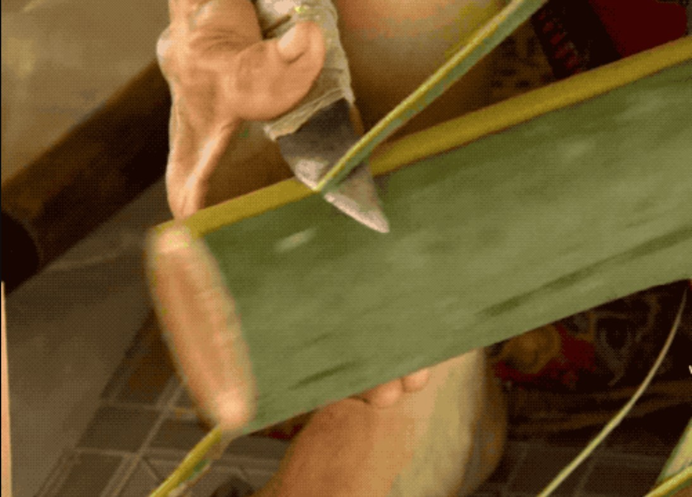
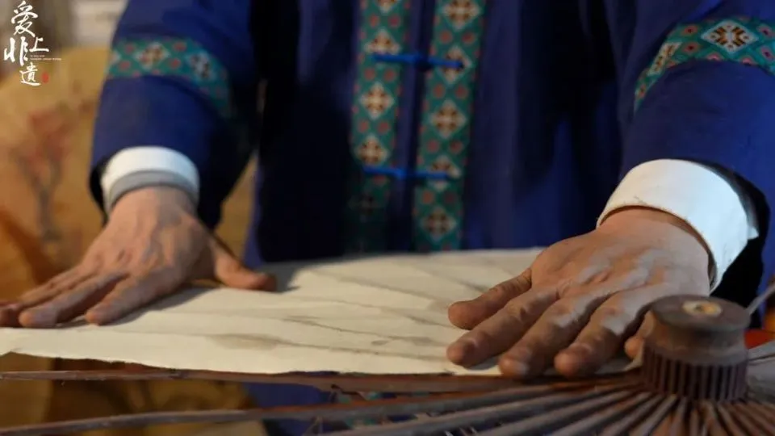
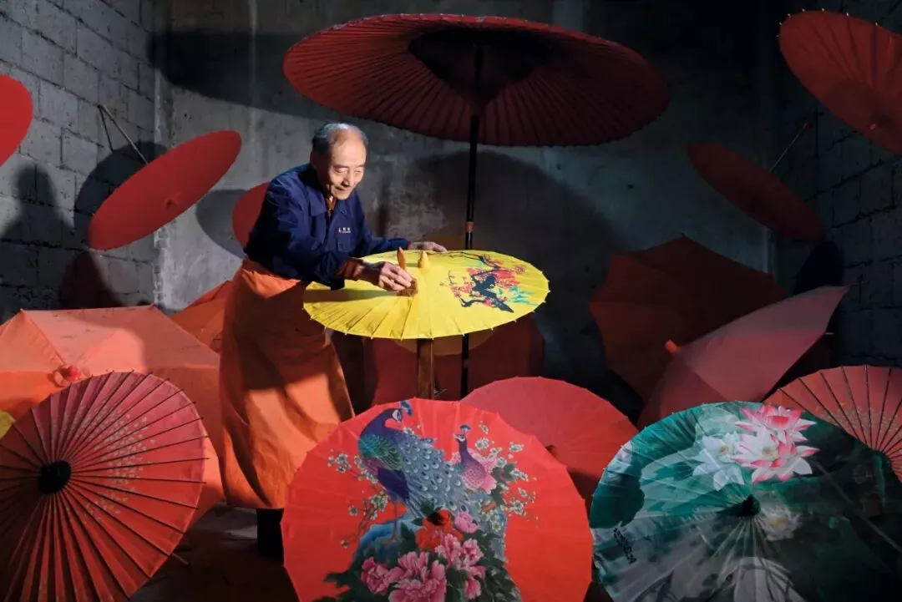

🪶 非遗工艺科普
揭秘油纸伞传统制作技艺 · 七步核心工艺
1. 选竹
选用3年以上楠竹或慈竹，要求韧性好、无虫蛀，经水浸日晒防蛀。
2. 削伞骨
手工削制36根长短骨，每根误差不超过1mm，钻孔串联。

3. 裱纸绘花
采用桑皮纸或棉纸，用柿子胶水粘贴伞面，手绘花鸟山水。

4. 刷桐油
天然桐油分三次刷制，每遍阴干7天，达到防水耐用效果。

揭秘油纸伞传统制作技艺 · 七步核心工艺
选用3年以上楠竹或慈竹，要求韧性好、无虫蛀，经水浸日晒防蛀。
手工削制36根长短骨，每根误差不超过1mm，钻孔串联。

采用桑皮纸或棉纸，用柿子胶水粘贴伞面，手绘花鸟山水。

天然桐油分三次刷制，每遍阴干7天，达到防水耐用效果。
